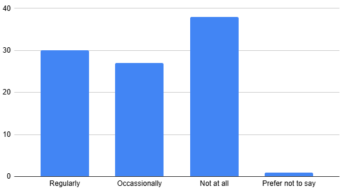
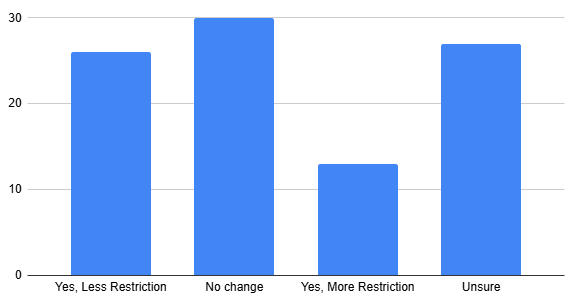
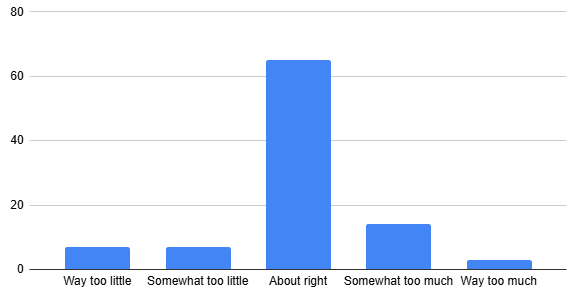
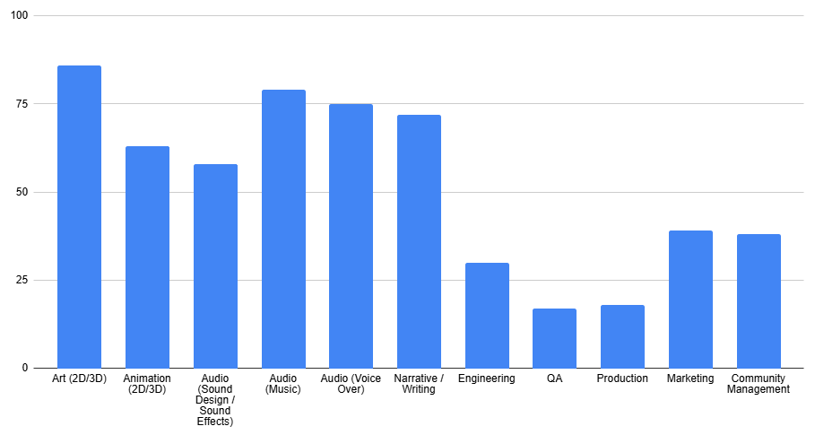
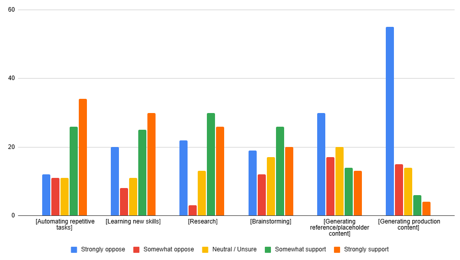

In the summer of 2026, we asked members of the BGD Slack community to complete a survey to gauge the community's feelings on AI and whether our current approach of directing the discussion of the use of AI for game development to a particular channel, giving the rest of the community the ability to "opt-out" of AI-related posts, was working.
In total we had:
members of the community respond to the survey. Thank you!
Here is what people had to say.

| Regularly | 30 |
| Occasionally | 27 |
| Not at all | 38 |
| Prefer not to say | 1 |

| Yes, Less Restriction | 26 |
| No change | 30 |
| Yes, More Restriction | 13 |
| Unsure | 27 |

| Way too little | 7 |
| Somewhat too little | 7 |
| About right | 65 |
| Somewhat too much | 14 |
| Way too much | 3 |

| Art (2D/3D) | 86 |
| Animation (2D/3D) | 63 |
| Audio (Sound Design / Sound Effects) | 58 |
| Audio (Music) | 79 |
| Audio (Voice Over) | 75 |
| Narrative / Writing | 72 |
| Engineering | 30 |
| QA | 17 |
| Production | 18 |
| Marketing | 39 |
| Community Management | 38 |

Based on this feedback, we believe that our current approach to keeping AI discussions mostly confined to AI-dedicated channels is the best way to continue to serve the community's interests, with 2/3rds of the community believing our current approach is "about right", and the remainder of the community split between whether Generative AI is discussed "too much" or "too little."
However, we also see that the community would like to see less restriction in how Generative AI content is moderated in Slack. Based on these results, we plan to create a new AI channel that is dedicated to the discussion of the impact of AI alongside our existing channel that is dedicated to the use of AI tools in game development. This new channel will be available for a trial period of 30 days for us to assess whether the opportunity to discuss these issues in a text-based medium will be possible without violating our terms of service which requires all participants in this community to treat each other with respect. We will revisit whether to keep the new channel open at the end of the 30 day trial period.
Thank you again for your participation in this challenging discussion where, as you can see, we have many different opinions about this controversial topic. We look forward to continuing the discussion in the Slack!